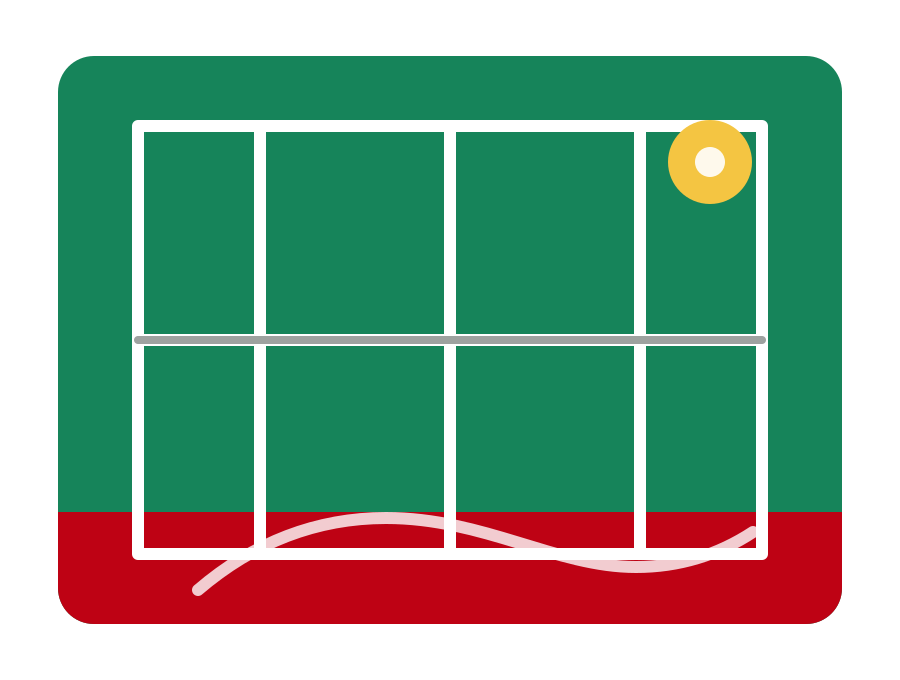

Galerie
Momente aus dem Clubleben
Bilder von Interclub, Junioren, Events, Padel und allem, was den TC Eschen-Mauren auf und neben dem Platz ausmacht.

Fotos
Alle Bilder auf einen Blick
Einblicke in Trainings, Begegnungen, Anlässe und das Clubleben beim TC Eschen-Mauren.